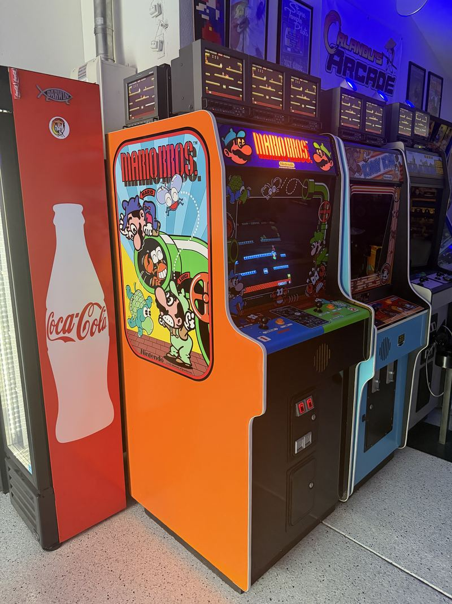

Mario Bros. Widebody
Two players, one sewer, zero excuses. The widebody Mario Bros. rounds out the Nintendo uprights.
Mario Bros. is where Mario stopped being “Jumpman from the Donkey Kong game” and became Mario — a plumber, with a brother, in a sewer full of turtles. It is also one of the great two-player arcade games, and not because it is cooperative. It technically is. In practice, the fastest way to clear a level is to bump your brother into a Shellcreeper and take the coins yourself, and everyone who has ever played it knows this.
The widebody cabinet exists for exactly that reason: two full control panels, side by side, close enough that the elbowing is physical as well as digital. It is the orange cabinet in the garage row, and it is the one people gravitate to in pairs.


What it looks like running
Unlike Donkey Kong beside it, Mario Bros. runs on a horizontal monitor — the action is lateral, four platforms wide, and the whole level is on screen at once. Flip the POW block, knock the Sidesteppers onto their backs, and kick them off before they right themselves.

Work log
A light touch — the cabinet was in good order and stayed that way.
- Side art replaced — New art by Darin Jacobs.
- Minor restoration to the original finish — Cleaned up rather than refinished.
Nintendo widebody
Two full control panels, side by side.
Mario Bros.
1983. Horizontal monitor, two players simultaneous.
Free play
In the garage row.
The Mario Bros. widebody anchors one end of the garage row, with Donkey Kong and the VS. UniSystem alongside. See the whole lineup →